| 編號 | 照片 | 名稱 |
| 01 | 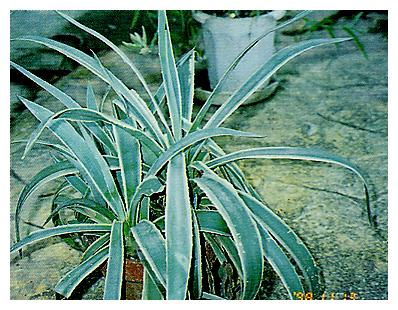 | 白緣龍舌蘭 |
| Agave angustifolaicv. 'Marginata' | ||
| 龍舌蘭科 Agavaceae | ||
| 02 |  |
樹蘭、珠蘭 |
| Aglaia odorata Lour. | ||
| 楝科 Meliaceae | ||
| 03 |  |
姑婆芋，天荷 |
| Alocasia macrorrhiza(Linn.) Schott. | ||
| 天南星科 Araceae | ||
| 04 |  |
蘆薈 |
| Aloe vera (L.)Webb. var. chinensis Haw. | ||
| 百合科 Liliaceae | ||
| 05 | 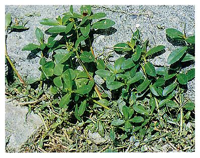 | 長梗滿天星、空心蓮子草、空心莧 |
| Alternanthera philoxeroides | ||
| 莧科 Amaranthaceae | ||
| 06 |  |
漢氏山葡萄、山葡萄、野葡萄、蛇葡萄 |
| Ampelopsis brevipedunculatavar. hancei (Planch) Rehder | ||
| 葡萄科 Vitaceae | ||
| 07 | 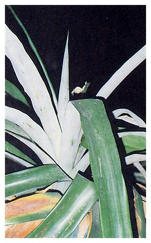 | 鳳梨、波蘿、旺來、黃梨 |
| Ananas comosus Merr. | ||
| 鳳梨科 Bromeliaceae | ||
| 08 | 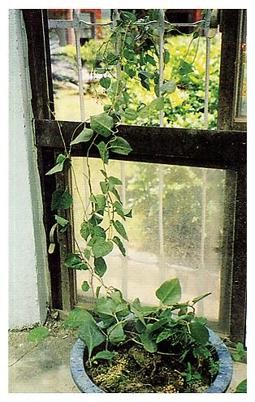 | 洋落葵、雲南白藥黃 |
| Anredera scandens. | ||
| 落葵科Basellaceae | ||
| 09 | 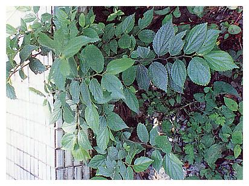 | 糙葉樹 |
| Aphananthe aspera Planch | ||
| 榆科 Ulmaceae | ||
| 10 | 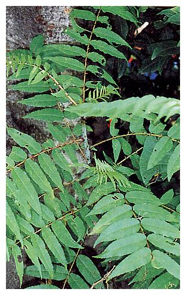 | 刺璁 |
| Aralia decaisneana Hance | ||
| 五加科 Araliaceae |
| 編號 | 照片 | 名稱 |
| 11 |  |
叢立檳榔 |
| Areca triandra | ||
| 棕櫚科 Palmae | ||
| 12 |  |
艾草 |
| Artemisia princepsvar. orientalis | ||
| 菊科 Compositae | ||
| 13 | 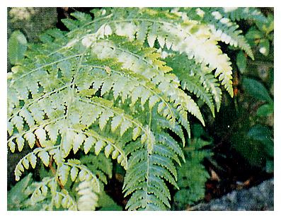 | 假蹄蓋蕨 |
| Athyriopsis petersenii(Kunze) Ching | ||
| 蹄蓋蕨科 Athyriaceae | ||
| 14 | 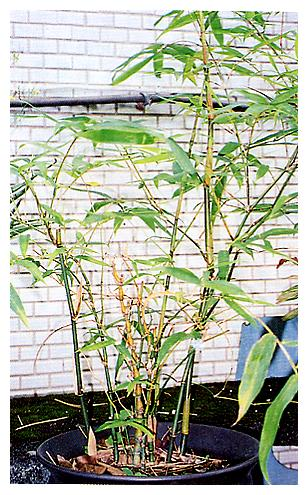 | 胡蘆竹 |
| Bambusa ventricosamcClure. | ||
| 禾本科 Gramineae | ||
| 15 |  |
四季秋海棠、洋秋海棠 |
| Begonia Xsemperflorens-cultorum Hort. | ||
| 秋海棠科 Begoniaceae | ||
| 16 | 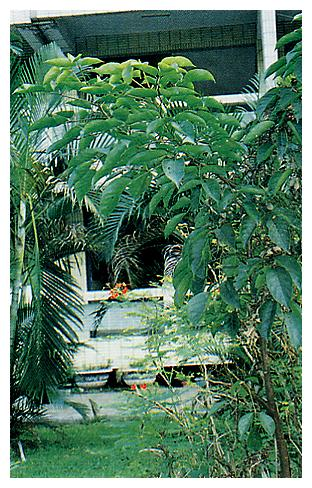 | 重陽木、茄苳 |
| Bischoffia javanica Blume | ||
| 大戟科 Euphorbiaceae | ||
| 17 | 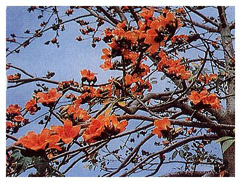 | 木棉、斑芝樹 |
| Bombax ceiba L. | ||
| 木棉科 Bombaceae | ||
| 18 |  |
甘藍菜、高麗菜 |
| Brassica oleracea L.var. capitata L.. | ||
| 十字花科 Cruciferae | ||
| 19 |  |
叢立孔雀椰子 |
| Caryota mitis Lour. | ||
| 棕櫚科 Palmae | ||
| 20 |  |
長春花、日日春 |
| Catharanthus roseus (L.)Don. | ||
| 夾竹桃科 Apocynaceae |
| 編號 | 照片 | 名稱 |
| 21 | 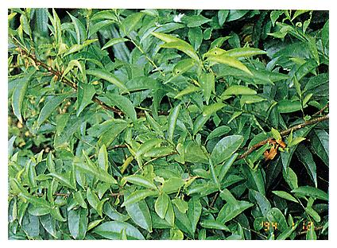 | 夜丁香、葉香木、木本夜來香 |
| Cestrum nocturnum L. | ||
| 茄科 Solanaceae | ||
| 22 | 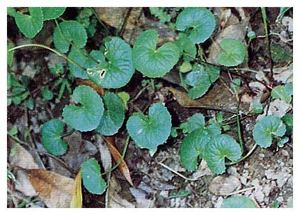 | 雷公根、含殼草、銅錢草、地棠草 |
| Centella asiatica（L.）Urban | ||
| 繖形科 Umbelliferae | ||
| 23 | 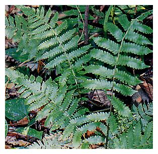 | 毛蕨、金星草 |
| Christella acuminata(Houtt.) L'ev. | ||
| 金星蕨科 Thelypteridaceae | ||
| 24 |  |
樟、本樟、栳樟 |
| Cinnamomum camphora(Linn.) Sieb | ||
| 樟科 Lauraceae | ||
| 25 |  |
柚子 |
| Citrus grandis Osbeck. | ||
| 芸香科 Rutaceae | ||
| 26 |  |
龍吐珠、珍珠寶蓮 |
| Clerodendrum thomsonaeBalf. f. | ||
| 馬鞭草科 Verbenaceae | ||
| 27 |  |
彩葉草、鞘蕊花 |
| Coleus X hybridus Voss. | ||
| 唇形科 Libiatae | ||
| 28 |  |
報歲蘭 |
| Cymbidium sinense Willd. | ||
| 蘭科 Orchidaceae | ||
| 29 |  |
土茯苓、茯苓菜、豬菜草 |
| Dichrocephala bicolor(Rolh) Schlechtendal. | ||
| 菊科 Compositae | ||
| 30 | 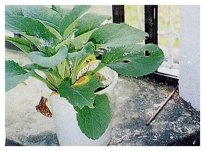 | 毛地黃 |
| Digitalis purpurea L. | ||
| 玄參科 Scrophulariaceae |
| 編號 | 照片 | 名稱 |
| 31 |  |
曇華、曇花、瓊花、月下美人 |
| Epiphyllum oxypetalum(DC.) Haw | ||
| 仙人掌科 Cactaceae | ||
| 32 |  |
枇杷 |
| Eriobotrya japonica Lindl. | ||
| 薔薇科 Rosaceae | ||
| 33 | 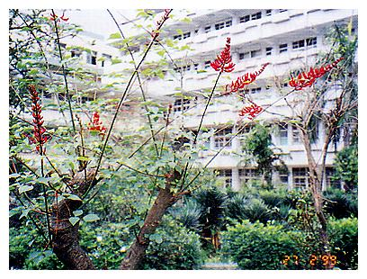 | 珊瑚刺桐 |
| Erythrina corallodendron L. | ||
| 蝶形花科 Fabaceae | ||
| 34 |  |
黃脈刺桐 |
| Erythrina variegata L. | ||
| 豆科 Leguminosae | ||
| 35 |  |
龍眼、桂圓、寶眼、亞荔枝 |
| Euphoria longana(Lour.)Steud. | ||
| 無串子科 Sapindaceae | ||
| 36 | 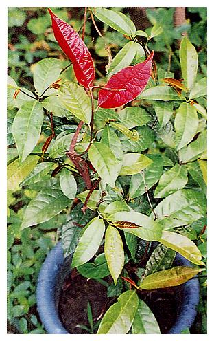 | 紅背桂、青紫木 |
| Excoecaria cochichinensisLour. | ||
| 大戟科 Euphorbiaceae | ||
| 37 |  |
垂榕、垂葉榕、白榕、小葉榕 |
| Ficus benjaminal L. | ||
| 桑科 Moraceae | ||
| 38 |  |
橡膠樹、橡皮樹 |
| Ficus elastica Roxb | ||
| 桑科 Moraceae | ||
| 39 |  |
榕樹 |
| Ficus microcarpa Linn | ||
| 桑科 Moraceae | ||
| 40 |  |
琴葉榕 |
| Ficuslyrata Warb./td> | ||
| 桑科 Moraceaeㄘe |
| 編號 | 照片 | 名稱 |
| 41 |  |
山黃槴、黃槴子、山槴、木丹 |
| Gardenia spp. | ||
| 茜草科 Rubiaceae | ||
| 42 | 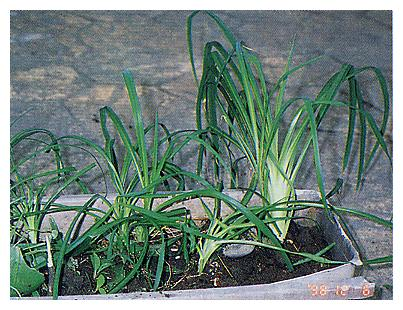 | 萱草、金針、諼草 |
| Hemerocallis fulva（L.）L. | ||
| 百合科 Liliaceae | ||
| 43 |  |
孤挺花 |
| Hippenastrum reginae(L.) Herb. | ||
| 石蒜科 Amaryllidaceae | ||
| 44 |  |
葎草、山苦瓜、勒草、鐵五爪龍 |
| Humulus scandens | ||
| 桑科 Moraceae | ||
| 45 |  |
天胡荽、遍地錦、滴滴金、圓葉止血草 |
| Hydrocotyle sibthorpioidesLam. | ||
| 繖形科 Umbelliferae | ||
| 46 |  |
紅仙丹、大仙丹、紅繡球 |
| Ixora chinensis Lam. | ||
| 茜草科 Rubiaceae | ||
| 47 |  |
白仙丹花 |
| Ixora parviflora | ||
| 茜草科 Rubiaceae | ||
| 48 | 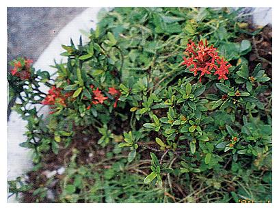 | 矮仙丹花 |
| Ixora x williamsii hort.cv. 'Sunkist' | ||
| 茜草科 Rubiaceae | ||
| 49 |  |
茉莉、木梨花、三白 |
| Jasminum sambac | ||
| 木犀科 Oleaceae | ||
| 50 | 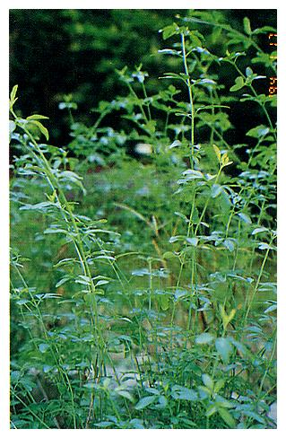 | 雲南黃馨、黃素馨 |
| Jesminum mesnyi Hence | ||
| 木犀科 Oleaceae |
| 編號 | 照片 | 名稱 |
| 51 |  |
紫薇、紅花九芎 |
| Lagerstroemia indica L. | ||
| 千屈菜科 Lythraceae | ||
| 52 | 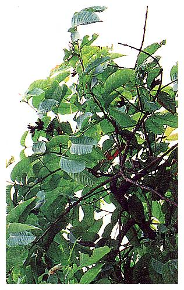 | 大花紫薇 |
| Lagerstroemia speciosa（L.）Pers. | ||
| 千屈菜科 Lythraceae | ||
| 53 |  |
番茄、西紅柿、番柿 |
| Lycopersicon esculentum Mill | ||
| 茄科 Solanaceae | ||
| 54 |  |
海金沙、吐絲草 |
| Lygodium japonicum（Thunb.）Sw. | ||
| 海金莎科 Schizaeaceae | ||
| 55 | 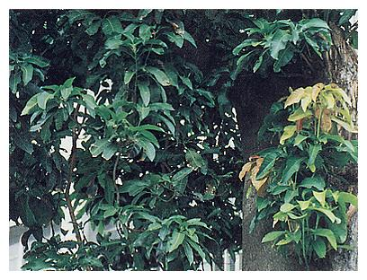 | 芒果、檬果 |
| Mangifera indica L. | ||
| 漆樹科 Anacardiaceae | ||
| 56 | 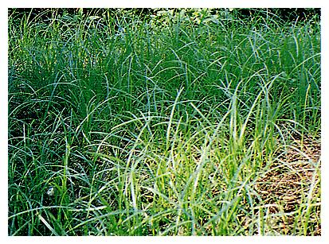 | 土香、香附子 |
| Mariscus cyperinus Vahl | ||
| 莎草科 Cyperaceae | ||
| 57 | 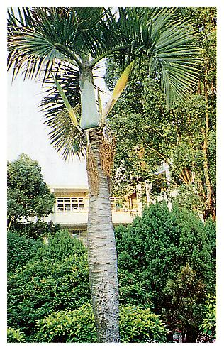 | 棍棒椰子 |
| Mascarena verschaffeltii | ||
| 棕櫚科 Palmae | ||
| 58 | 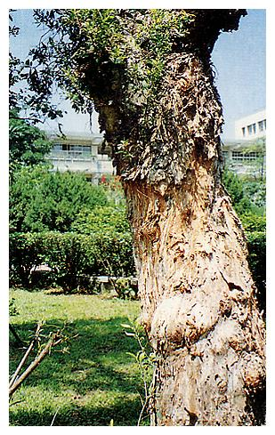 | 白千層、脫皮樹、日本相思樹 |
| Melaleuca leucadendra(L.) L. | ||
| 桃金孃科 Myrtaceae | ||
| 59 |  |
白玉蘭（木筆） |
| Michelia alba DC. | ||
| 木蘭科 Magnoliaceae | ||
| 60 |  |
含笑花、含笑 |
| Michelia fuscata(Andr.) Blume | ||
| 木蘭科 Magnoliaceae |
| 編號 | 照片 | 名稱 |
| 61 |  |
紫茉莉、胭脂花 |
| Mirabilis jalapa L. | ||
| 紫茉莉科 Nyctaginaceae | ||
| 62 | 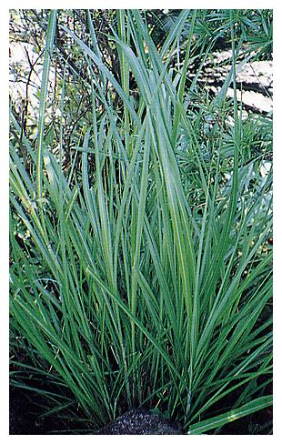 | 芒草、五節芒、鬼芒、寒芒 |
| Miscanthus floridulus (Lebill)warb. ex Schum.& Laut. | ||
| 禾本科 Gramineae | ||
| 63 | 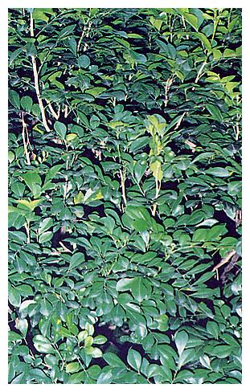 | 七里香、月橘 |
| Murraya paniculata (L) Jack | ||
| 芸香科 Rutaceae | ||
| 64 | 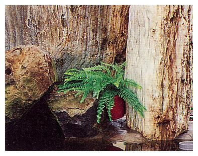 | 球蕨、腎蕨、玉羊齒 |
| Nephrolepis auriculata（L.）Trimen. | ||
| 蕨科Nephrolepidaceae | ||
| 65 |  |
桂花、木犀銀桂、金桂、丹桂、四季桂 |
| Osmanthus fragrans(Thunb.) Lour. | ||
| 木犀科 Oleaceae | ||
| 66 |  |
紫花酢醬草 |
| Oxalis corymbosa DC. | ||
| 酢醬草科 Oxalidaceae | ||
| 67 |  |
紅葉酢漿草、小紅楓 |
| Oxalis hedysaroidescv. 'Rubra' | ||
| 酢漿草科 Oxalidaceae | ||
| 68 | 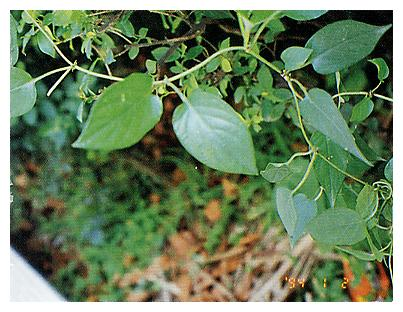 | 雞屎藤、牛皮凍、臭腥藤 |
| Paederia chinensis Hance | ||
| 茜草科 Rubiaceae | ||
| 69 | 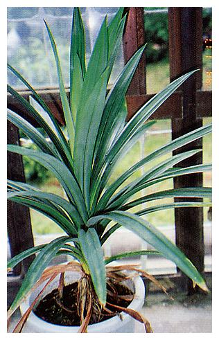 | 香林投、七葉蘭 |
| Pandanus dorus | ||
| 露兜樹科 Pandanaceae | ||
| 70 |  |
林投、紅刺林投、麻露兜 |
| Pandanus utilis Bory | ||
| 露兜樹科 Pandanaceae |
| 編號 | 照片 | 名稱 |
| 71 | 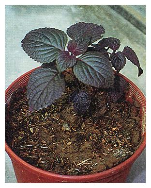 | 紫蘇、赤蘇、香蘇 |
| Perilla frutescens (L.) Britt. | ||
| 唇形科 Labiatae | ||
| 72 |  |
錫蘭葉下珠 |
| Phyllanthus myrtifoliusMoon | ||
| 大戟科 Euphorbiaceae | ||
| 73 |  |
葉下珠、珠仔草、真珠草 |
| Phyllanthus urinaria L. | ||
| 大戟科 Euphorbiaceae | ||
| 74 | 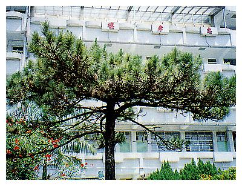 | 琉球松 |
| Pinus luchuensis Mayr. | ||
| 松科 Pinaceae | ||
| 75 |  |
車前草、五根草、蝦蟆衣 |
| Plantago asiatica L. | ||
| 車前草科 Plantaginaceae | ||
| 76 |  |
緬槴花、雞蛋花、印度素馨、寶塔樹 |
| Plumeria rubra L.var.acutifola(Poir. ex Lam.) | ||
| 夾竹桃科 Apocynaceae | ||
| 77 |  |
羅漢松 |
| Podocarpus macrophyllus(Thunb.) D.Don | ||
| 羅漢松科 Podocarpaceae | ||
| 78 | 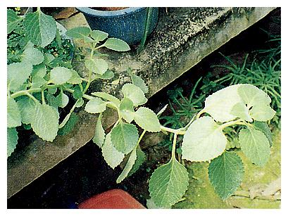 | 到手香、廣藿香 |
| Pogostemon cablin | ||
| 唇形科 Labiatae | ||
| 79 | 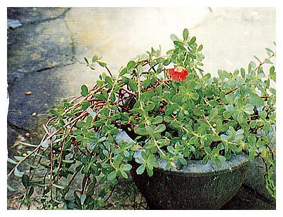 | 馬齒莧、豬母乳、豬母菜、瓜子葉 |
| Portulaca oleracea L. | ||
| 馬齒莧科 Portulaceae | ||
| 80 |  |
霧水葛、石珠、腫兒消、水雞油 |
| Pouzolzia zeylanica(L.) Benn. | ||
| 蕁麻科 Urticaceae |
| 編號 | 照片 | 名稱 |
| 81 | 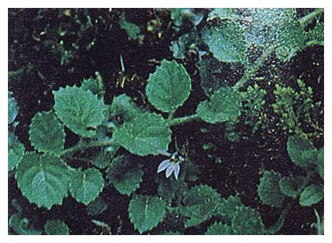 | 普拉特草 |
| Pratia nummularia（Lam.）A.Br.& Asch | ||
| 桔梗科 Campanulaceae | ||
| 82 |  |
番石榴、拔仔、巴樂 |
| Psidium guajava | ||
| 桃金孃科 Myrtaceae | ||
| 83 |  |
鳳尾蕨、鳳尾草、雞足草 |
| Pteris multifida Poir | ||
| 鳳尾蕨科 Pteridaceae | ||
| 84 |  |
安石榴、石榴、榭榴 |
| Punica granantum L. | ||
| 安石榴科 Punicaceae | ||
| 85 |  |
旅人蕉、旅人木 |
| Ravenala madagascariensisSonn. | ||
| 旅人蕉科 Strelitziaceae | ||
| 86 | 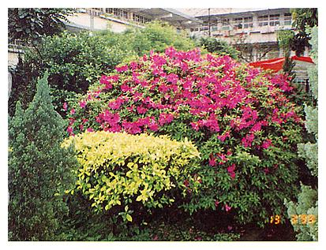 | 杜鵑花、滿山紅 |
| Rhododendron Spps. | ||
| 杜鵑花科 Ericaceae | ||
| 87 | 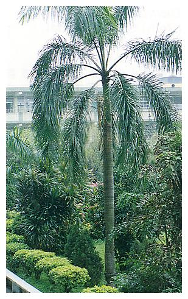 | 大王椰子 |
| Roystonea regia (H.B.K.) | ||
| 棕櫚科 Palmae | ||
| 88 |  |
非洲堇、非洲紫羅蘭 |
| Saintpaulia inantha H.Wendl. | ||
| 苦苣苔科 Gesneriaceae | ||
| 89 | 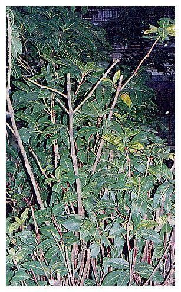 | 金葉木 |
| Sanchezia speciosrJ. L. eonard | ||
| 爵床科 Acanthaceae | ||
| 90 |  |
假吐金菊、芫荽草 |
| Soliva anthemifolia R.Br. | ||
| 菊科 Compositae |